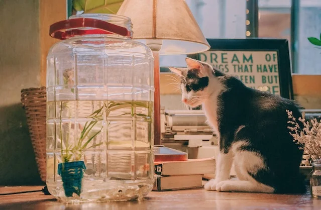
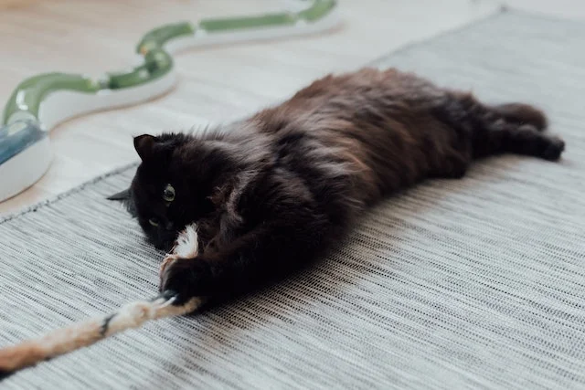
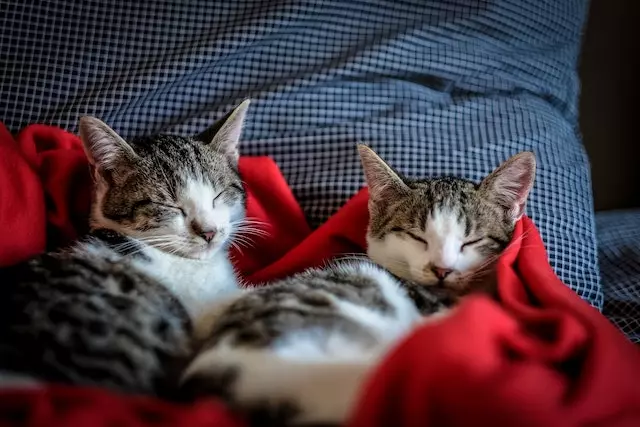
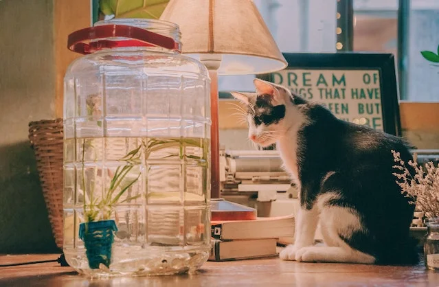
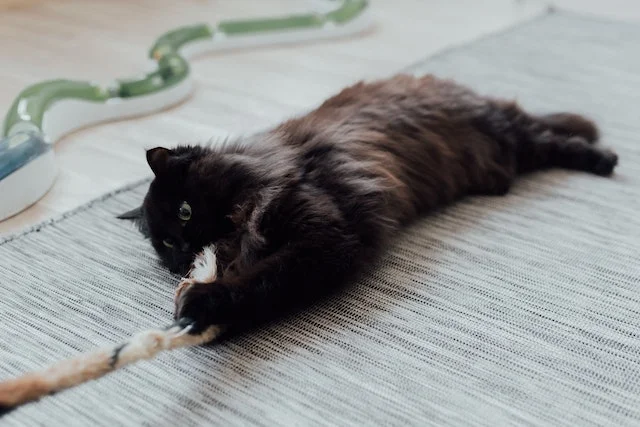
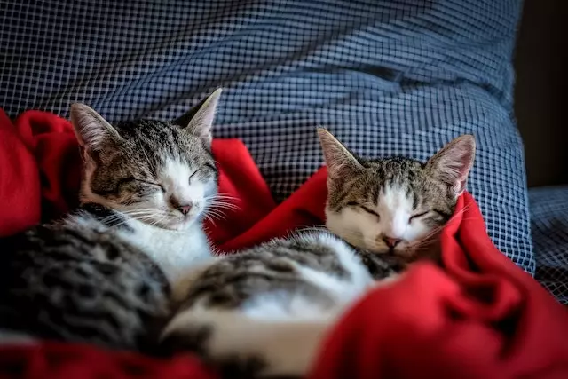
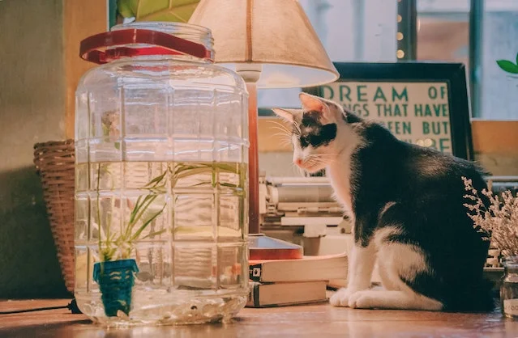
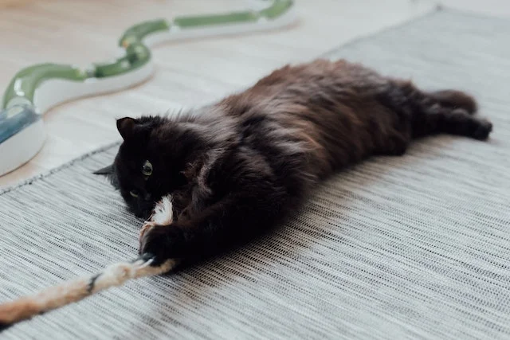
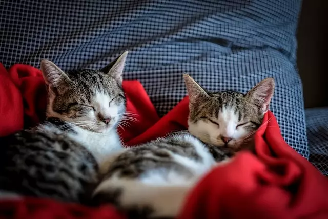

Many of our cats are named after literary characters and authors. Some of the names that you will encounter on your visit would be Sherlock, Watson, Agatha, Oscar Wilde, Gandalf, Jo, Uhtred, and these are to name a few.
Cats love when you are relaxing with a book and will definitely cuddle up on your lap. So, pick up a book, have some coffee or tea, relax, and enjoy a day with some cuddly cats.
Because we want to keep a calm atmosphere for the cat's well-being we kindly ask if you can book your time when you want to visit. This allows us to know how many customers will be coming in, so the kitties won't feel overwhelmed. We humans can also benefit from being in a cosy, calm atmosphere, and to make that even better...coffee and pastries. Click here to take you to the booking page.


